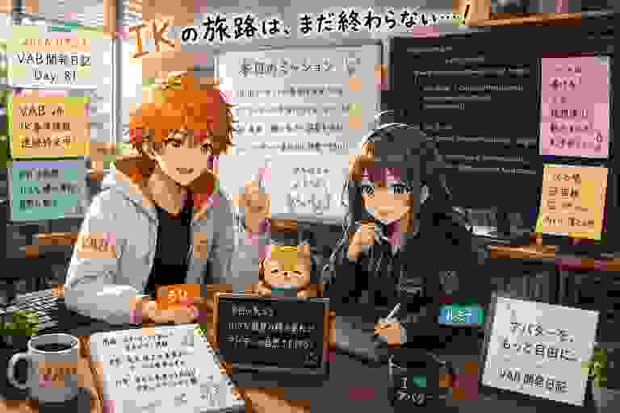

まばたきが、
別の顔を連れてきた日
今日のVR Avatar Viewerは、ほんの一瞬のまばたきから始まりました。ところが調べてみると、アバターが目を閉じるたびに「似ているけれど別の表情」を選んでしまう可能性が判明。瞬きの候補選びを、変換時から再設計する一日になりました。

目を閉じただけなのに、顔が少し違う
3Dアバターの表情は、顔の形を少しずつ変える「BlendShape（ブレンドシェイプ）」という仕組みで作られています。笑顔、口の開閉、まばたきなど、それぞれに名前の付いた変形データが用意されています。
問題は、アバターによって「blink」「Blink」「VRC_blink」など似た名前が複数存在することです。名前だけを広く探すと、目を閉じるための本命ではなく、別用途の表情を拾ってしまう場合があります。
ろひ「瞬きした」
ルミナ「はい」
ろひ「目は閉じた」
ルミナ「成功ですね」
ろひ「でも顔がちょっと違う」
ルミナ「瞬き候補のオーディションを始めます」
VRC_blinkを優先し、偶然ではなく意図で選ぶ
本日2時30分のコミットでは、VRChat向けアバターで広く使われる「VRC_blink」を優先する判定を追加しました。単に名前を部分一致で探すのではなく、どの候補を先に使うべきかを明確にしています。
さらに、変換ツール側で見つけた瞬き情報を、アバターをひとまとめに保存する独自形式「VAB」へ記録し、Viewer側で復元する経路も強化しました。毎回Viewerが推測するのではなく、変換時に分かった正解を一緒に持ち運ぶ考え方です。
387行追加。まばたき一回分としては重い
コミット「VRC瞬きBlendShapeの優先判定を修正」では、4ファイルに387行追加、8行削除が入りました。瞬きを再生する処理だけでなく、候補選択のテスト、VABのランタイム状態、変換時の書き出しまで更新されています。
見た目は一瞬ですが、その一瞬を安定させるには「候補を探す」「優先順位を決める」「ファイルへ保存する」「読み込み後に使う」「テストで守る」という一連の流れが必要でした。
服や髪の見た目も、テストで守る
今日のもう一つのコミットでは、VABへ変換したあとにアバターの色や質感が正しく再現されるかを確認するテストを増やしました。マテリアルとは、表面の色、画像、光沢などをまとめた「見た目の設定」です。
アバターによって使い方が大きく異なるため、変換処理は一見動いていても、特定の服だけ色が違う、画像の割り当てが抜ける、といった問題が起きます。β0.6公開前に、その見落としを自動テストで捕まえやすくしています。
未コミット作業は、起動マニュアル
現在の作業ツリーには、β0.6向けの起動マニュアルと関連ドキュメントの更新が残っています。つまり今日は、内部の不具合を直すだけでなく、初めて起動する人が迷わないための入口も整備中です。
ルミナ「瞬きは自然になりました」
ろひ「初めて起動する人も自然に使える？」
ルミナ「マニュアルを書きます」
ろひ「ではまだ完成ではない」
今日のまとめ
- 瞬きに使う表情候補の優先順位を見直し、VRC_blinkを優先
- 瞬き情報を変換ツールからVAB、Viewerへ受け渡す経路を強化
- 候補選択を守る自動テストを追加
- アバターの色や質感を再現する処理の検証を強化
- β0.6向けの起動マニュアルを未コミットで整備中
本日のひとこと
目を閉じるだけなら一瞬。正しい顔で目を閉じるまでには、387行。
今日は派手な新機能の日ではありません。しかし、アバターが自然に見えること、変換後の見た目が崩れないこと、初めての人が迷わず起動できること。どれもViewerを安心して使うための大切な土台です。